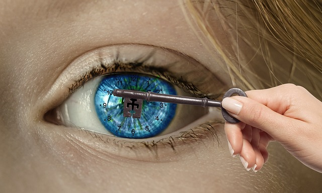

The Clock and the Eye
The human body has adapted to react to natural light during the course of the day. Light exposure to the eye modulates human circadian rhythms. Circadian rhythms, from the Latin words circa die, means “approximately a day”. Clock genes in mammals create mechanisms in the human body that regulate organs and hormones. Sunlight during the day and lack of it at night provides the natural stimulus that tune the body’s clock.
Balance
When the circadian rhythms are in sync humans benefit by enjoying normal: sleep, alertness, appetite, body temperature, metabolism, blood pressure and reproduction.
Sunlight provides other benefits additional to circadian rhythm regulation. The body creates vitamin D in response to sunlight. Vitamin D is the “sunshine vitamin” that plays a role in immunity, bone health, weight and mood regulation. Too much sunlight can cause skin cancer, but too little is problematic.